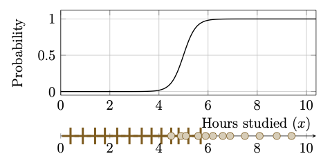

Chapter 3: Logistic Regression
Neurons can be categorized mainly into two types based on their output. If the output belongs to a discrete set, then the neuron is of a classification type. On the other hand, if the output is any real number in an interval, then the neuron is said to be of regression type. There is also a third type of neuron, whose output is a real number in the interval \((0, 1)\), which is interpreted as a class probability and used for probabilistic classification.
The perceptron, studied in the previous chapter, involves a hard classification rule, which is suitable for a linearly separable dataset. However, such a hard decision boundary does not measure confidence in the prediction when the dataset structure is unknown or the data involves random noise. In such cases, it is desirable to have a model that outputs a probability that the input belongs to each class, allowing both a probabilistic interpretation and more flexible decision rules at inference time.
In this chapter, we introduce a statistical model, called logistic regression, for probabilistic binary classification. Assuming that the log-likelihood ratio between two classes is affine in the feature vector, the model obtains the posterior probability of either class in the form of a logistic sigmoid composed with an affine function of the input. Thus, the model has a single neuron structure.
In Subsection 3.1.1, we derive logistic regression from first principles using Bayes' theorem. In Subsection 3.1.2, we observe that logistic regression is precisely a single artificial neuron with the sigmoid activation. The natural cost function for training a logistic regression model, derived from maximum likelihood estimation, is the cross-entropy cost function, discussed in Subsection 3.2.1. We also present a training algorithm based on the gradient descent method in Subsection 3.2.2 and end the chapter with a few real-world applications discussed in Section 3.3.
3.1 The Logistic Regression Model
Consider a datasetIf \(\mathcal{D}\) is linearly separable, then a perceptron can learn a separating hyperplane with weight \(\boldsymbol{w}\) and bias \(b\), and classify inputs by the rule
What is the probability that an input \(\boldsymbol{x}\) belongs to \(\mathcal{C}^+\)?
This leads to a probabilistic model, which is preferable to a hard classification rule. We begin with a motivating example.
Since the data is one-dimensional, the separating hyperplane is just a point in this case. From the illustrating figure, we can see that the point cannot be placed anywhere in the interval \([0,10]\) so that the failed students are separated from the students who passed the exam. Therefore, a perceptron classification will induce a misclassification in this problem. An alternative is to seek a probabilistic approach, where the probability of passing as a function of hours studied is illustrated as a solid curve in Figure 3.1.

Figure 3.1: The hours-studied dataset of Example 3.1 is visually shown where plus (\(+\)) denote failures (\(y_i=0\)) and filled circles denote passes (\(y_i=1\)). The probability of passing as a function of hours studied, \(\hat{p}(x)\), is shown as a solid black curve.
3.1.1 Derivation using Bayes' Formula
In this subsection, we derive a probabilistic model, called the logistic regression model systematically using Bayes' theorem.Using Bayes' theorem, the posterior probability for the class \(\mathcal{C}^+\) can be written as
"Given that we have observed the input vector \(\boldsymbol{x}\), the probability that it belongs to the class \(\mathcal{C}^+\)''
This notation is standard in machine learning literature and is a shorthand notation for the conditional probability \(\mathbb{P}(Y = 1 \mid \boldsymbol{X} = \boldsymbol{x})\), where \(Y \in \{0,1\}\) is the class-label random variable and \(\boldsymbol{X}\) is the input random vector.
Assume that the log-likelihood ratio is linear in \(\boldsymbol{x}\), that is, there is an augmented weight vector \(\overline{\boldsymbol{w}}\) such that
for all input vectors \(\boldsymbol{x}\). Then the log-odds can be written as
Noting that \(\mathbb{P}(\mathcal{C}^- \mid \boldsymbol{x}) = 1 - \mathbb{P}(\mathcal{C}^+ \mid \boldsymbol{x})\) and solving the above equation for \(\mathbb{P}(\mathcal{C}^+ \mid \boldsymbol{x})\), we obtain
where \(\mathscr{S}_1\) is the logistic function defined in (1.5).
From the above expression, we see that estimating a weight vector \(\boldsymbol{w}\) and a bias \(b\) allows us to assign probabilities for each of the two classes \(\mathcal{C}^+\) and \(\mathcal{C}^-\). At the inference stage, by applying a suitable decision rule (for instance, thresholding at \(0.5\)), we obtain a binary (hard) classification. In the context of statistical learning, such a probabilistic classification model is called logistic regression.
- The word logistic refers to the logistic activation function used to model the posterior probability.
- The word regression reflects the assumption that the log-likelihood ratio is affine in \(\boldsymbol{x}\). This terminology is in contrast with the statistical convention in which "regression'' refers to function approximation, however, here the model is used for classification.
The following problem establishes that the inverse of the logistic function is precisely the logit function, which confirms the consistency of the terminology.
Logistic regression assumes that the log-likelihood ratio between the two classes is an affine function of the input as given in (3.1). This assumption holds exactly for certain class-conditional distributions. One such distribution is given in the following problem.
Consider a binary classification problem with classes \(\mathcal{C}^+\) and \(\mathcal{C}^-\). Let \(\boldsymbol{X} \in \mathbb{R}^{n_0}\) be a feature vector whose class-conditional distributions are multivariate Gaussian with class means \(\boldsymbol{\mu}^+, \boldsymbol{\mu}^- \in \mathbb{R}^{n_0}\) and a common positive-definite covariance matrix \(\Sigma \in \mathbb{R}^{n_0 \times n_0}\), that is,
3.1.2 Single Neuron Interpretation
The logistic regression model derived in the previous subsection has a natural interpretation in the language of artificial neurons with the neuron function3.2 Training Logistic Regression
Recall from Subsection 1.4.2 that to learn parameters \((b, \boldsymbol{w})\) of a model, we have to choose a suitable cost function. There is a natural choice of the cost function to train logistic regression, which we discuss in the following subsection.3.2.1 Cross-Entropy Cost Function
The natural training principle for logistic regression is maximum likelihood estimation (MLE), where the parameters \((b,\boldsymbol{w})\) are chosen to maximize the likelihood of the observed labels given the inputs.For a single training example \((\boldsymbol{x}_i,y_i)\), the model predicts a probability \(\hat{p}_i = \mathbb{P}(\mathcal{C}^+ \mid \boldsymbol{x}_i)\). The likelihood of observing the true label \(y_i \in \{0,1\}\) under this prediction is
The above expression is the cross-entropy cost function for binary labels \(y_i\in\{0,1\}\) under the Bernoulli model. The following definition generalizes this concept to arbitrary probability distributions.
Entropy is a concept in information theory which measures the uncertainty of a random variable \(X\). It quantifies the average amount of information we gain while observing the outcome of \(X\). When \(X\) is more predictable, the entropy is low and it takes the value zero if \(X\) is deterministic. On the other hand, if \(X\) is uniformly distributed over many possible outcomes, then entropy is high.
- \(r=0\) or \(r=1\): the outcome is deterministic, so \(\mathfrak{S}=0\) (using the convention \(0\log 0 = 0\)).
- \(r=\tfrac{1}{2}\): both outcomes are equally likely, giving the maximum \(\mathfrak{S}(\tfrac{1}{2}) = \ln 2 \approx 0.693\) nats.
- For all other \(r \in (0,1)\): the entropy is strictly between \(0\) and \(\ln 2\).
- Die-1: \(\mathbb{P}(X=k) = \frac{1}{6},~k=1,2,\ldots,6.\)
- Die-2: \(\mathbb{P}(X=1) = 0.9,~\mathbb{P}(X=k) = 0.02,~k=2,\ldots,6.\)
Observe that the entropy \(\mathfrak{S}(p)\) measures the inherent uncertainty of the true distribution \(p\), whereas the cross-entropy \(\mathfrak{C}(p,q)\) measures the average penalty incurred when using \(q\) to model outcomes drawn from \(p\). From the above problem, we see that minimizing cross-entropy is equivalent to making \(q\) as close as possible to the true distribution \(p\).
In logistic regression, \(p_i\) is the point mass at the true label \(y_i \in \{0,1\}\) and \(q_i = \mathrm{Bernoulli}(\hat{p}_i)\) is the model's predicted distribution for sample \(i\). Computing the discrete cross-entropy over \(\mathcal{Y}=\{0,1\}\) and averaging over the training set recovers exactly (3.3) as
There is another important concept in information theory, closely related to entropy and cross-entropy, which we define below.
As mentioned in the definition, KL divergence measures the discrepancy between two probability distributions. It can be used as a cost function in neural networks whenever the network output represents a probability distribution, because minimizing KL encourages the predicted distribution to match the target distribution.
- Show that \(\mathcal{C}_{\texttt{KL}}(p\|q) \geq 0\).
- Is \(\mathcal{C}_{\texttt{KL}}(p\|q)\) symmetric? Justify your answer.
- Does the following triangle inequality hold? Justify your answer.
\[ \mathcal{C}_{\texttt{KL}}(p\|q) \leq \mathcal{C}_{\texttt{KL}}(p\|r) + \mathcal{C}_{\texttt{KL}}(r\|q). \]
3.2.2 Gradient Descent Algorithm
The cost function \(\mathcal{L}(b, \boldsymbol{w})\) given by (3.3) is smooth and convex, but it has no closed-form minimizer. Hence, we must rely on a computational technique to approximateFor a given initial guess \((b^{(0)}, \boldsymbol{w}^{(0)})\), the iterative formula for the gradient descent method is given by
Since \(\nabla_{\boldsymbol{w}} s_i = \boldsymbol{x}_i\) and \(\partial s_i/\partial b = 1\), the chain rule gives
Starting from an initial guess \((b^{(0)}, \boldsymbol{w}^{(0)})\), the parameters are updated iteratively as described in the following algorithm.
Input:
- Training dataset \(\mathcal{D}_\text{train} = \big\{(\boldsymbol{x}_i, y_i) \mid i = 1,2,\ldots, N_\text{train}\big\}\)
- Initial parameters \((b^{(0)}, \boldsymbol{w}^{(0)})\),
- learning rate \(\eta > 0\), and
- tolerance \(\varepsilon > 0\)
For each \(k = 0, 1, 2, \ldots\), perform the following steps:
- Step 1: Compute:
\(\hat{p}_i^{(k)} = \mathscr{S}_1\!\big(\langle \boldsymbol{w}^{(k)}, \boldsymbol{x}_i \rangle + b^{(k)}\big)\), for each \(i = 1, 2, \ldots, N_\text{train}\).Also, the gradients \(\nabla_{\boldsymbol{w}}\mathcal{L}\) and \(\frac{\partial\mathcal{L}}{\partial b}\).
- Step 2: Check:
If the condition\[\displaystyle\sqrt{\|\nabla_{\boldsymbol{w}}\mathcal{L}\|^2 + \left(\frac{\partial\mathcal{L}}{\partial b}\right)^2} < \varepsilon\]is satisfied, then go to the Output step below.Else, go to Step 3.
- Step 3: Update:
\[ \boldsymbol{w}^{(k+1)} = \boldsymbol{w}^{(k)} - \frac{\eta}{N_\text{train}}\sum_{i=1}^{N_\text{train}} \big(\hat{p}_i^{(k)} - y_i\big)\boldsymbol{x}_i, \]\[ b^{(k+1)} = b^{(k)} - \frac{\eta}{N_\text{train}}\sum_{i=1}^{N_\text{train}} \big(\hat{p}_i^{(k)} - y_i\big). \]Increment \(k\) and go to Step 1.
- Generate a synthetic dataset \(\mathcal{D}=\{(x_i, y_i)~\mid~i=1,2,\ldots,N\}\) by considering two classes
\[x \mid \mathcal{C}^- \sim \mathcal{N}(2.5,\, 1.5),\quad x \mid \mathcal{C}^+ \sim \mathcal{N}(7.5,\, 1.5),\]where \(\mathcal{N}(\mu, \sigma^2)\) denotes the Gaussian distribution with mean \(\mu\) and variance \(\sigma^2\). Note that
numpy.random.normal(mu, sigma)in Python takes the standard deviation \(\sigma\) as its second argument; use \(\sigma = \sqrt{1.5}\). Take \(N = \#(\mathcal{C}^-) + \#(\mathcal{C}^+) = 50 + 50.\) - Choose 70 examples uniformly at random and store them as \(\mathcal{D}_{\rm train}\). Store the remaining as \(\mathcal{D}_{\rm test}.\)
- Train a logistic regression on the training dataset \(\mathcal{D}_{\rm train}\) using Algorithm 3.1.
- Evaluate the trained model on \(\mathcal{D}_{\rm test}\) by computing
- the misclassification rate:
\[\text{Error} = \frac{1}{N_{\rm test}}\sum_{i \in \mathcal{D}_{\rm test}} \mathbf{1}[\hat{y}_i \neq y_i],\quad \hat{y}_i = \begin{cases} 1 & \text{if}~\hat{p}_i \geq 0.5,\\ 0 & \text{if}~\hat{p}_i < 0.5, \end{cases}\]
- the test cross-entropy loss:
\[\mathcal{L}_{\rm test} = -\frac{1}{N_{\rm test}}\sum_{i \in \mathcal{D}_{\rm test}} \big[y_i \log \hat{p}_i + (1-y_i)\log(1-\hat{p}_i)\big].\]
- the misclassification rate:
3.3 Applications of Logistic Regression
Logistic regression is well-suited for binary classification problems in which the log-odds of the outcome are approximately linear in the input features, and the output probability has a direct, interpretable meaning in the application domain. We illustrate this with five canonical examples drawn from finance, medicine, natural language processing, business analytics, and fraud detection.3.3.1 Finance: Credit Default Prediction
A bank maintains a labelled dataset of past borrowers,
3.3.1.1 Model and training.
From (3.2), the logistic regression model suggestsWe can use Algorithm 1 to obtain the estimate of \((b, \boldsymbol{w})\), which is the augmented weight vector \((b^*, \boldsymbol{w}^*)\) to which the algorithm converges.
From (3.1), we see that the \(j^{\rm th}\) component \(w^{*}_{j}\) of the fitted weight \(\boldsymbol{w}^{*}\) represents the change in log-odds of default per unit increase in the corresponding feature \(x_j\), with all other features held fixed. Equivalently, \(e^{w_j}\) is the multiplicative factor by which the odds of default change per unit increase in \(x_j\). This is analogous to an odds-ratio interpretation used in classical credit scorecards.
(a) Downloading the Dataset: Download the Default of Credit Card Clients dataset from the
UCI Credit Card Default Dataset
The dataset includes \(N = 30000\) credit card holders of a Taiwanese bank, each described by \(n = 23\) numerical attributes \(\boldsymbol{x}_i\) (credit limit, age, six monthly repayment statuses, six bill amounts, six payment amounts, and three coded demographic variables), with \(y_i = 1\) if the holder defaulted in the following month and \(y_i = 0\) otherwise.
Compute the empirical default rate
(b) Dataset Preparation:
Split the index set \(\{1, 2, \ldots, N\}\) in the ratio \(70\!:\!30\) by drawing the training indices uniformly at random without replacement, initialising the random number generator with a fixed seed. State the seed you used. Denote the resulting training and test sets by \(\mathcal{D}_{\text{train}}\) and \(\mathcal{D}_{\text{test}}\), of sizes \(N_{\text{train}}\) and \(N_{\text{test}}\).
Next standardise each feature,
Use the standardised features in training the model.
Also compute the default rate within \(\mathcal{D}_{\text{train}}\),
(c) Training Algorithm: Train a logistic regression model on the training dataset \(\mathcal{D}_{\rm train}\) using Algorithm 3.1, with \((b^{(0)},\boldsymbol{w}^{(0)}) = (0,\boldsymbol{0})\), \(\eta = 0.1\), \(\varepsilon = 10^{-5}\), and a cap of \(10^4\) iterations.
Verify the identity
(d) Observing Convergence: Plot \(\mathcal{L}(b^{(k)},\boldsymbol{w}^{(k)})\) against \(k\). Repeat with \(\eta = 0.001\) and \(\eta = 10\) and plot all three curves together. Describe in one or two sentences what each learning rate does.
Compare your observations with the sufficient condition for descent,
(e) Testing the Trained Model: For every \((\tilde{\boldsymbol{x}}_i, y_i)\in \mathcal{D}_{\text{test}}\), compute \(\hat{p}(\tilde{\boldsymbol{x}}_i)\) and predict default \(\hat{y}_i\) by defining the hard classification rule as
- A test point is a true positive if \(\hat{y}_i = y_i = 1\), denoted by \(N_{\mathrm{TP}}\);
- A test point a false positive if \(\hat{y}_i = 1\) but \(y_i = 0\), denoted by \(N_{\mathrm{FP}}\);
- A test point a true negative if \(\hat{y}_i = y_i = 0\), denoted by \(N_{\mathrm{TN}}\); and
- A test point a false negative if \(\hat{y}_i = 0\) but \(y_i = 1\), denoted by \(N_{\mathrm{FN}}\).
The confusion matrix is defined as
- Compute the confusion matrix, together with
\[ \text{Accuracy} = \frac{N_{\mathrm{TP}} + N_{\mathrm{TN}}}{N_{\text{test}}}, \qquad \text{Precision} = \frac{N_{\mathrm{TP}}}{N_{\mathrm{TP}} + N_{\mathrm{FP}}}, \]\[ \text{Recall} = \frac{N_{\mathrm{TP}}}{N_{\mathrm{TP}} + N_{\mathrm{FN}}}, \text{False positive rate} = \frac{N_{\mathrm{FP}}}{N_{\mathrm{FP}} + N_{\mathrm{TN}}}, \]
- Compute the test error, which is the empirical risk under the \(0\)--\(1\) loss
\(\ell_{01}(\hat{y}, y) = \mathbb{1}\{\hat{y} \neq y\}\), defined as
\[ \mathcal{E}_{\text{test}} = \frac{1}{N_{\text{test}}}\sum_{i=1}^{N_{\text{test}}} \mathbb{1}\{\hat{y}_i \neq y_i\} \left(= \frac{N_{\mathrm{FP}} + N_{\mathrm{FN}}}{N_{\text{test}}} = 1 - \text{Accuracy}\right). \]
- Consider the trivial classifier \(\hat{y}_i^{\,\text{triv}} = 0\) for
all \(i\), which grants every loan and uses none of the features. Write
down its confusion matrix and verify that its accuracy equals
\(N_{\mathrm{TN}}/N_{\text{test}}\), which is \(1-\hat{\pi}\) up to
sampling error, and that its recall is \(0\). Compute the difference
\[ \text{gain} = \text{Accuracy}_{\text{model}} - (1-\hat{\pi}), \]and comment on its size.
- Examine the recall. Of the borrowers in \(\mathcal{D}_{\text{test}}\) who actually defaulted, what fraction did the model identify? In which cell of the confusion matrix do most of the model's correct answers lie, and does the trivial rule of (iii) obtain them as well?
- Conclude: explain why accuracy is misleading when the two classes are strongly imbalanced, and state which of the quantities in (i) you would report to a credit risk committee instead.
(f) Further Experiments:
- Lower the threshold from \(1/2\) to \(0.3\) and recompute the confusion
matrix. Which errors increase and which decrease? Which of the two
thresholds should a bank prefer, and why?
Which of \(N_{\mathrm{FP}}\) and \(N_{\mathrm{FN}}\) increases and which decreases? What happens to the accuracy, and what happens to the recall? Which of the two thresholds should a bank prefer, given that a type 2 error costs it the unrecovered principal whereas a type 1 error costs it only the interest margin it did not earn?
- Rerun (c) without the standardisation of (b), keeping \(\eta = 0.1\). What happens, and why? Use the bound \(L \le \|\tilde{X}\|_2^2 / (4N_{\text{train}})\) of part (d) to explain the observation quantitatively, and find by trial a learning rate for which the unstandardised problem does converge.